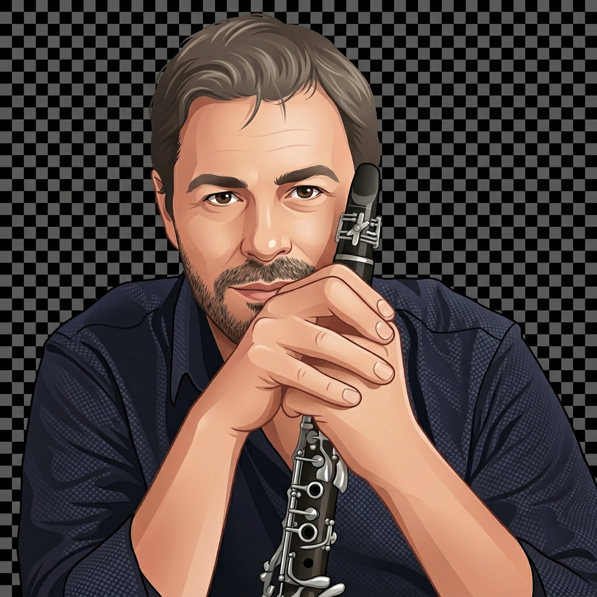

Professor Alê
Ligar Microfone
Afinador
Jogo
Ligue o microfone para começar
—
Frequência
— Hz
Desvio
— ¢
Precisão
—%
♭ BEMOL −50¢
AFINADO
+50¢ SUSTENIDO ♯
—
Chalumeau
Garganta
Clarion
Altíssimo
Nível de entrada
Mostrar nota soando
A4 =
−
440
+
Hz

Alê
Selecione um modo e pressione
Nova Escala
para começar!
Aleatório
Praticar
Acordes
⚙
Maior
Men Nat
Men Har
Men Mel
Dórico
Frígio
Lídio
Mixolídio
Lócrio
▶ Tocar
Tipos de acorde
Maior
Menor
Dim
Aug
Dom 7
Maior 7
Menor 7
Dim 7
1 oct
2 oct
↑
↑↓
Tônica
Mi grave
Fácil
Difícil
▶ Nova Escala